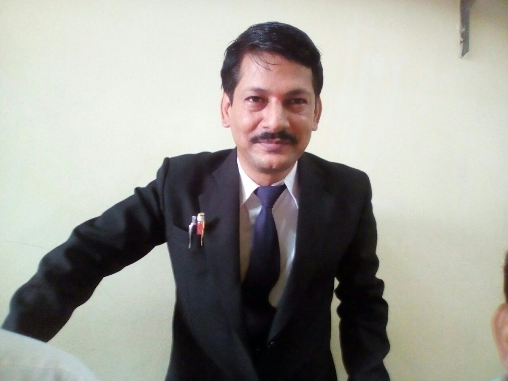
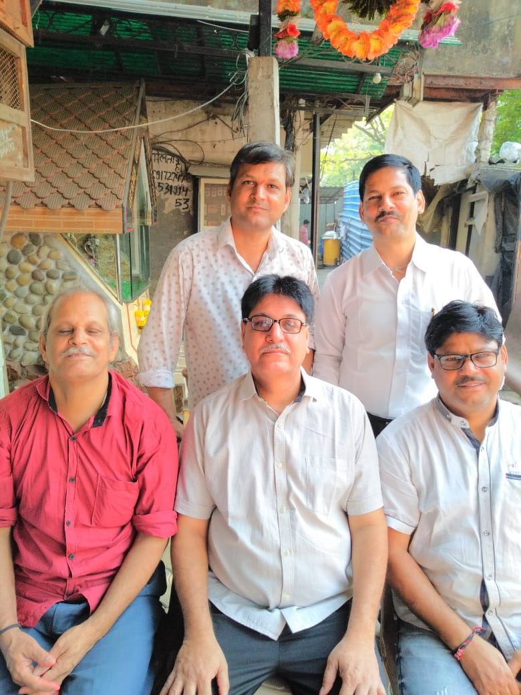

प्रमुख शोधकर्ता - पंडाजी स्व. श्री राजमल जी लच्छीराम जी पंडीया

पंडाजी डॉ. श्री मन्नालाल जी पंडीया
( B.com,B.M.S.,LL.B.,LL.M,Ph.D.(Law) )
[email protected]
Mob: 9819457422 / 9867420790
सह –शोधकर्ता – पंडाजी श्री भारत मन्नालाल जी पंडीया

श्री रूपनारायण जी मंदिर के इतिहास की शोध /ख़ोज/जानकारी स्व. श्री मोतीबा, स्व. श्री धुलाबा छड़ीदार , स्व. श्री भुराबा चोवटिया, स्व.श्री हरिलाल जी चोवटिया , स्व.श्री विरपाणबा, स्व. श्री चुनीलाल जी भंडारी, स्व.श्री सीताबा , स्व.श्री वनजी भंडारी के सहयोग से स्व. श्री राजमल जी लच्छीराम जी पंडीया ने की और उनके सहयोग से उनके पुत्र डॉ. श्री मन्नालाल जी पंडीया ने सेतु के रूप में श्री भुरजी चोवटिया, श्री रोशनलालजी ,श्री शिव शंकरजी ,श्री नारायण लालजी ,श्री भवरलालजी ,श्री सुभाष डाल जी , श्रीमती मोवनीबाई राजमलजी पंडीया और सबसे महत्वपूर्ण श्री भारत मन्नालाल पंडीया के सहयोग,सहकार्य ,साथ से सम्पूर्ण की.
no one can't use in-app data in any other field of subject or other which is not related to the shree roopnarayan ji temple or village ; also not use this data with any modification or changes without permission and not use for promotion of any person , or any entity etc. we are not allowed to anyone for fairuse.if anyone need this data in term of study or use in other work will required to take permission of Dr.Mannalal R. Pandiya.